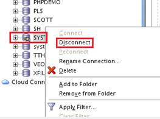

электронный
ресурс по учебной дисциплине 1-58 01 01 - "ИНЖЕНЕРНО-ПСИХОЛОГИЧЕСКОЕ ОБЕСПЕЧЕНИЕ ИНФОРМАЦИОННЫХ ТЕХНОЛОГИЙ".
|
||
| Оглавление | Программа | Теория | Практика| Контроль знаний | Об авторах | ||
|
Оглавление
Лабораторная работа 5. Знакомство с возможностями ORACLE-сервер 1. Цель работы Установка инструмента для работы с базами данных Oracle SQL Developer, настройка подключений к локальной БД, работа с данными из БД с помощью Oracle SQL Developer. 2. Учебный материал по лабораторной Oracle SQL Developer — интегрированная среда разработки на языках SQL и PL/SQL, ориентированная на применение в среде OracleDatabase. Корпорация Oracle предоставляет продукт бесплатно. Сама среда написана на языке программирования Java, работает на всех платформах, где доступна среда выполнения Java SE. Для скачивания продуктов Oracle необходимо сначала зарегистрироваться на сайте. Жмём SignUp и регистрируемся. Рисунок 1 – Страница входа на сайт oracle.com. После успешной регистрации можем перейти к скачиванию нужных продуктов. Раскрываем закладку Downloads, в секции Developertools выбираем SQL Developer. На открывшейся странице необходимо поставить галочку в графе принятия лицензионного соглашения, иначе скачать необходимый файл не удастся. Выбираем необходимую версию инструмента и скачиваем. Рисунок 2 – Страница для скачивания инструмента SQL Developer Сейчас рекомендуется зайти на страницу с указаниями по установке (Installation Notes). Из указаний ясно, что SQL Developer для своей работы требует установки JDK (ссылка на скачивание JDK стоит рядом). Перейдём по ссылке на страницу для скачивания JDK. Кнопку Download под надписью JDK. Принимаем лицензионное соглашение и скачиваем необходимую версию JDK. После завершения вышеперечисленных пунктов у вас на компьютере должы быть скачены 2 файла: - JDK (имя файла будет приблизительно таким: jdk-7u40-windows-x64.exe) - SQL Developer (имя файла будет приблизительно таким: sqldeveloper64-3.2.20.09.87-no-jre.zip) JDK сначала нужно установить, поэтому выполните установку (все параметры при установке можно оставить по умолчанию). SQL Developer не требует установки. Просто распакуйте архив в любое удобное место и запустите файл sqldeveloper.exe. Рисунок 3 – Папка с инструментом SQL Developer После открытия SQL Developer выглядит так, как на скриншоте ниже. Подключений к базе на данный момент нет. Если у вас уже установлена база данных Oracle на компьютере, то можете создать локальное соединение. Для этого нажмите Connections и выберите CreateLocalConnections. Рисунок 4 – Создание локальных подключений Примечание: слова «подключение», «схема», «пользователь» в БД oracle в общем случае являются синонимами. Различия в этих понятиях незначительны. Теперь подключитесь к пользователю SYSTEM. Пароль у него будет таким, какой вы указывали при установке базы данных oracle. Если подключение прошло успешно, значит база должна работать. Напишем простой запрос к базе для проверки работоспособности и нажмём либо зелёный трейгольник для выполнения запроса, либо сочитаниеклавишь «CTRL+ENTER»: select * fromdual; Ниже на экране отобразится результат запроса. Рисунок 5 – Проверка работоспособности БД После проверки работоспособности БД перейдём к следующему заданию. В навигационной панели, где указаны подключения к БД, раскроем пользователя SYSTEM, затем перейдём к папке OtherUsers, найдём пользователя HR. Когда пользователь HR найден, нажимаем на него правой кнопкой мыши и выбираем EditUser. Рисунок 6 – Пользователь HR от имени SYSTEM По умолчанию этот пользователь заблокирован. Необходимо снять галочку AccountisLocked и принять изменения, затем закрыть диалоговое окно. Примечание: в этом же окне можно поменять пароль для данного пользователя. По негласному правилу пользователям обычно назначаю такой же паколь, как и их имя. Но если не поменять пароль здесь, то при подключении к пользователю вероятнее всего нужно будет ввести пароль, как и для SYSTEM. Если этот пароль не сработал, то нужно попробовать его сменить в данном диалоговом окне. Рисунок 7 - Редактирование пользователя HR Теперь попробуем подключиться к пользователю HR. Нажмём на подключение и в появившемся окне введём пароль. Если подключения HR в списке нет, то его нужно создать. Для этого нажимаем на зелёный плюсик и выбираем NewConnection. Из списка доступных подключений выбираем oracle-orcl. Мы видим характеристики этого подключения. Т.к. и это подключение, и пользователь SYSTEM, и пользователь HR находятся в одной и той же базе, то и характеристики будут похожими. Если нету подключения под названием system-orcl, то выберите для редактирования другое доступное соединение, где прописаны характеристики, отмеченные в нижнем красном прямоугольнике на скриншоте. Рисунок 8 – Характеристики подключения system-orcl Берём и просто меняем имя подключения, имя пользователя и пароль. Остальные характеристики оставляем прежними. Нажимаем на кнопку Test. Если статус внизу отобразится Success, то подключение настроено верно. Теперь можно нажимать кнопку Connect. Рисунок 9 – Изменение характеристик подключения После того, как подключение с HR установлено, можно посмотреть содержимое данной схемы (список таблиц, вьюшек, процедур, индексов и т.д.) Подключение к SYSTEM нам больше не понадобится, поэтому его следует выключить. Пользователь SYSTEM является главным в БД и имеет множество привилегий и если использовать его неправильно, это может привести к непоправимым последствиям. Нажимаем на подключение SYSTEM и выбираем Disconnect.  Рисунок 10 – Отключение от схемы SYSTEM Вернёмся к схеме HR. Следующим шагом будет построение диаграммы реляционной модели для данного пользователя. На ней можно увидеть таблицы с колонками и связи между таблицами. Нажимаем File->DataModeler->Import->DataDictionary.
Рисунок 11 – Расположение редактора диаграмм В появившемся диалоговом окне выбираем необходимое подключение, нажимаем Next. Отмечаем галочкой только схему HR. Нажимаем Next. Ставим галочки для всех таблиц в предложенном списке. Нажимаем Next. Затем увидим итоговую информацию. Если что-то было указано не верно, это ещё можно исправить, нажав кнопку Back и внеся необходимые изменения. Если всё верно, нажимаем Finish. Видим реляционную диаграмму для схемы HR. Рисунок 12 – Реляционная диаграмма для схемы HR Пришло время написать запрос, который помог бы разобраться в данных, хранящихся в данной схеме. Например: отобразить работников (имя, фамилия) с доходом большим, чем у их непосредственного начальника. Вариантзапроса №1: SELECT E.FIRST_NAME, E.LAST_NAME FROM EMPLOYEES E WHERE E.SALARY > (SELECT EMP.SALARY FROM EMPLOYEES EMP WHERE EMP.EMPLOYEE_ID = E.MANAGER_ID); Вариантзапроса №2: SELECT E.FIRST_NAME || ' ' || E.LAST_NAME AS NAME FROM EMPLOYEES E WHERE E.SALARY > (SELECT EMP.SALARY FROM EMPLOYEES EMP WHERE EMP.EMPLOYEE_ID = E.MANAGER_ID); Результат выполнения запроса можно увидеть ниже на скриншоте Рисунок 13 – Результат выполнения запроса 3. Порядок выполнения работы 1. Ознакомиться с учебным материалом 2. В IDEEclipse создать проект. 3. Написать запрос, который может решить следующую задачу: вывести информацию по каждому отделу и для каждой должности о минимальной и максимальной зарплате. 4. Продемонстрировать результат работы преподавателю. 5. Согласовать с преподавателем содержание отчёта и подготовить его.
|
| (С) БГУИР |